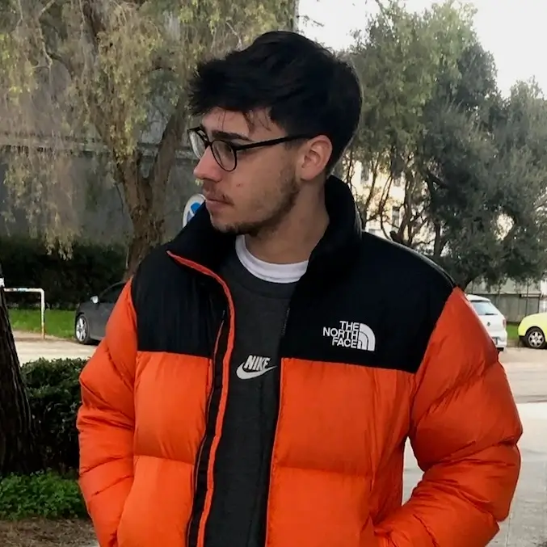

Antonio Silvestre

Coordinatore efficace con eccellenti capacità di collaborazione, formazione e comunicazione, orientato alla creazione di relazioni solide e a risultati concreti
Contatti
- Traversa 1 Tratturo San Lorenzo, Troia
- antonio.silvestre99@hotmail.it
- +39 340 588 2458
- www.linkedin.com/antonio-silvestre
Formazione
- Diploma di maturità scientifica
- Liceo Scientifico "Alessandro Volta", Foggia | 2018
- Laurea Triennale - Informatica
- Università degli Studi di Bari "Aldo Moro" | 2026
- Master - AI e Agenti AI per il Business
- start2impact / Università degli Studi "Guglielmo Marconi" | 2026-2027 (in corso)
Lingue
- Italiano: Madrelingua
- Inglese: B2
Soft Skill
- Problem solving
- Lavoro in team e collaborazione
- Comunicazione efficace
- Gestione del tempo e delle priorità
- Adattabilità e flessibilità
- Autonomia e senso di responsabilità
- Apprendimento rapido e attenzione ai dettagli
Esperienza lavorativa
- Ristorazione e Hospitality | 2016 - 2025
- Un percorso professionale di circa dieci anni, iniziato come cameriere e sviluppatosi attraverso esperienze in diverse realtà della ristorazione, fino a ricoprire ruoli di responsabilità nella gestione della sala e nella comunicazione digitale.
- Responsabile di sala / Gestione social
- Canarùte Poggiofranco, Bari | 2021 - 2025
- Cameriere / Gestione social
- Canarùte Bistrot, Bari | 2024 - 2025
- Cameriere - Esperienze professionali
- Pane e Salute, Orsara di Puglia (FG) | 2016 - 2019
- Villa Jamele, Orsara di Puglia (FG) | 2019
- New Livingstone Pub, Troia (FG) | 2020 - 2021
- Pizzeria Joseph, Bari | 2021 - 2022
- Il Bugigattolo, Bari | 2022
- Gallo Matto, Bari | 2025
- Competenze sviluppate durante il percorso
- Gestione delle responsabilità e organizzazione del lavoro
- Comunicazione e collaborazione con colleghi e clienti
- Adattamento a contesti lavorativi differenti
- Gestione delle priorità e risoluzione dei problemi
- Comunicazione digitale e gestione dei social media
Competenze tecniche
- Sviluppo Web
- HTML5, CSS3, JavaScript, Tailwind CSS, SQL
- Node.js, React, TypeScript (in fase di apprendimento)
- Realizzazione di siti web responsive
- Manipolazione del DOM e gestione degli eventi
- Programmazione e sviluppo software
- Programmazione orientata agli oggetti (Java, C#, Python, TypeScript)
- Sviluppo di videogiochi con Unity e C#
- Progettazione di meccaniche di gioco
- Debugging e risoluzione dei problemi
- Strumenti e ambienti di sviluppo
- Git e GitHub
- Visual Studio Code, Eclipse, NetBeans
- Utilizzo di macOS e Linux
- Grafica e progettazione
- Adobe Illustrator, Canva, Adobe Express
- Creazione di contenuti grafici e social
- Prototipazione e sviluppo di progetti personali
Progetti
- UniPerdida | Java
- Realizzazione di un gioco in Java di tipo avventura testuale per l'esame di Metodi Avanzati di Programmazione.
- Link: UniPerfida
- Who? | Unity, C#
- Realizzazione tramite Unity e C# di una demo di un gioco di tipo Open World per l'esame di Sviluppo di Videogiochi.
- Link: WHO?
- Learners Runners | Unity, C#
- Realizzazione tramite Unity e C# di un endless runner educativo per la tesi di Laurea in Informatica.
- Link: Learners Runners
- canarutebistrot.com
- Sito vetrina di Canarùte Bistrot con gestione tramite credenziali del database contenente il menu
- Link: Canarùte Bistrot
- Progettazione grafica e comunicazione digitale per la
ristorazione
- Realizzazione di materiali grafici e contenuti digitali per attività di ristorazione: progettazione di totem pubblicitari di grande formato (fino a 2 metri), creazione e gestione di menu digitali accessibili tramite QR code, ideazione di loghi e identità visive, produzione di video per Instagram e Facebook e grafiche promozionali per eventi sportivi.
- Link: Grafiche